📊 什麼是 Chart.js？（給前端新手的白話指南）
簡單來說，Chart.js 是一個專門用來在網頁上「畫圖表」的 JavaScript 工具庫。當你手上有密密麻麻的數據（例如陣列、資料庫撈出來的 JSON），如果只用 HTML 刻表格，讀者根本看不懂。這時候你只要把數據丟給 Chart.js，它就能自動幫你畫出漂亮的折線圖、長條圖、圓餅圖或雷達圖。
它的底層是利用 HTML5 的 <canvas>（畫布）技術，直接在網頁上把圖形「畫」成一張點陣圖。因為它設定簡單、內建動畫效果，是軟體圈最熱門的圖表工具之一。
🚀 核心配置範例：如何透過標準 JavaScript 初始化 Chart.js
以下展示在原生網頁中引入第三方 CDN 套件的標準骨架。透過定義 type、data（包含 labels 與 datasets）以及控制幾何形變的 options（包含 scales 與 plugins），即可在 HTML5 畫布上渲染出嚴密的數據圖表。
<script src="https://cdn.jsdelivr.net/npm/chart.js"></script>
<canvas id="myChart"></canvas>
<script>
const ctx = document.getElementById('myChart').getContext('2d');
new Chart(ctx, {
type: 'line',
data: {
labels: ['項目A', '項目B'],
datasets: [{
label: '數據指標名稱',
data: [100, 50],
borderColor: '#38bdf8'
}]
},
options: {
responsive: true,
scales: {
x: { grid: { color: '#1e293b' } },
y: { type: 'linear', position: 'left' }
},
plugins: {
legend: { labels: { color: '#e2e8f0' } }
}
}
});
</script>
🛠️ 架構思辨：解密 Viewport 標籤的「刻意缺席」
許多剛接觸前端網頁開發的新手工程師，在建立 HTML 模板時都會習慣性地加上 <meta name="viewport" content="width=device-width, initial-scale=1.0"> 標籤，甚至認為沒有放這個標籤就是工程師的疏忽或遺忘。
然而，事實相反。在許多高階系統或精密網頁中，拿掉 Viewport 是一個經過深思熟慮、完全掌握設計主權的「刻意技術防禦策略」。
🔬 為什麼故意不放 meta viewport？
-
捍衛密集數據的幾何主權：
在一些涉及跨維度因果建模、複雜多維度對照表、或是大型工廠 EAP/ERP 調度看板的網頁中，資訊密度極度龐大。如果強行引入響應式引擎，手機端會將畫面強行壓縮至 375px 的窄螢幕範疇，導致 Y 軸刻度重疊、X 軸時間線錯位、文字瘋狂折行破版。
-
物理尺度的完美防禦：
當我們刻意拿掉 Viewport 標籤時，等同於拒絕手機瀏覽器的自作聰明。網頁會強行以標準桌機解析度（如 1024px 以上）進行硬核渲染。雖然在手機畫面上文字會等比例縮小，但所有圖形的幾何相對位置、座標軸對齊線、數據重疊因果關係全部都能 100% 完美呈現。使用者只需透過兩指手勢縮放即可精準查閱，這在實務上比看一個被擠壓到面目全非的響應式畫面更具備實用價值。
-
🖥️ 全端裝置最佳查閱指引（解密雙端縮放的佈局碰撞）：
本報告呈現之圖表為實作網頁之對比截圖，由於圖片受限於點陣壓縮，在初始狀態下皆可能產生局部模糊。然而，雙端瀏覽器的底層縮放機制存在本質上的架構差異：
-
❌ 電腦端（Page Zoom 的佈局割裂）：
若在電腦端透過瀏覽器放大（Ctrl鍵 + 滑鼠滾輪），排版引擎僅會重新計算並放大流式文字與區塊級距，而夾在網格中的數據截圖因幾何尺寸已遭鎖定，並不會跟著等比例放大，反而會保持原狀並導致排版割裂。電腦端讀者若欲查閱高精度圖表，請直接點擊圖表下方的專案連結調閱原始網頁。
-
✅ 行動端（Pinch-to-zoom 的視訊紅利）：
由於本網頁刻意移除 Viewport 標籤，行動端瀏覽器會啟用虛擬畫布進行背景超採樣渲染。行動端讀者點入本頁後，只需配合雙指手勢放大（Pinch-to-zoom）螢幕，即可直接解鎖手機螢幕高 PPI（視網膜級像素密度）的物理紅利，整張畫布與截圖會隨雙指完美等比例放大且變得清晰，100% 還原無失真的高清幾何數據。
🔍 核心數據審計：全專案圖表響應式衝突實證看板
🛠️ 審計幕後秘辛：以 Git 部署生命週期換取的「真實物理鐵證」
本報告中所呈現之「🔒 加上 Viewport」崩潰對照組截圖，絕非透過瀏覽器 DevTools 模擬器粗糙產出。
為了完美捕捉行動端 RWD 引擎對 Canvas 座標系的真實幾何摧殘，作者於開發期間，刻意將核心 HTML 模板重構、強制塞入 <meta name="viewport"> 標籤，並執行 git commit 與 git push。
在耐心地等待 GitHub Actions / Vercel 後台編譯、部署與 CDN 緩存刷新後，肉身使用行動端原生瀏覽器進行像素級螢幕截圖（Snapshot）。
於成功固化「Bug 現場數據」後，隨即再度修改代碼、將 Viewport 殘留標籤徹底拔除，重新 Commit 復原主線，以捍衛本專案最初始、最嚴密的笛卡爾幾何尊嚴。這趟反向工程，是本專案對數據尊嚴最硬核的實證代價。
以下矩陣完整收錄了跨領域專案中，不同座標體系（笛卡爾座標系 vs. 極座標系）在手機端原生渲染下的真實物理表現。透過「反響應式鎖定（無 Viewport）」與「標準響應式擠壓（有 Viewport）」的像素級畫面實測，嚴密論證設計主權對數據尊嚴的決定性影響。
📊 離散數值長條圖：恆河污染實證
長條圖 Bar
空間實體對比
社會解構矩陣
專案實證：於
宗教與科學衝突專案中，以長條圖動態展示恆河流經的印度各大城市的大腸桿菌濃度實測數據，強力破除「聖水能淨化身體」的迷信。
幾何審計：加了 Viewport（右）會導致 X 軸城市標籤被迫旋轉 45 度傾斜、視覺對比張力被閹割；移除 Viewport（left）使城市名稱完美水平並排，數據高聳對比一眼秒懂。
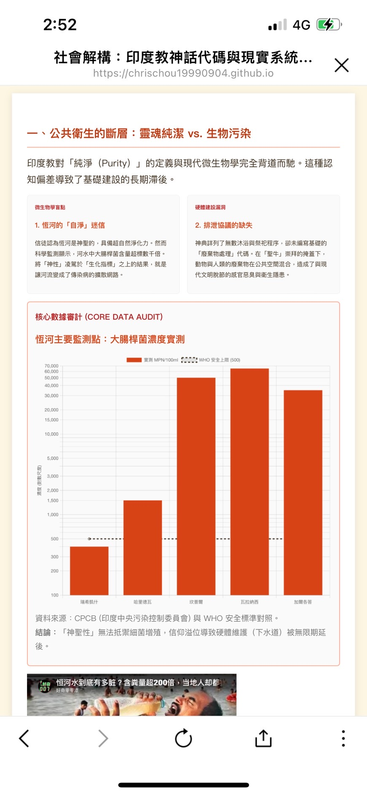
🔓 移除 Viewport (水平工整)
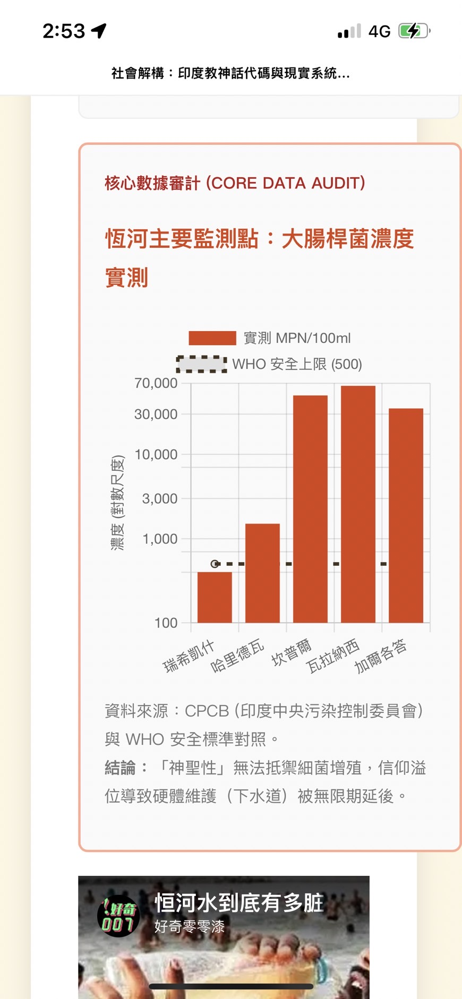
🔒 加上 Viewport (文字傾斜)
🎯 極座標雷達圖：文明 OS 效能對比
雷達圖 Radar
多維能力特徵
極座標系
專案實證：於
宗教與科學衝突專案中，橫向量化評估德魯伊「口傳體制 OS」與基督教「文字體制 OS」在五大指標（資訊儲存率、傳播頻寬、抗損毀性、擴展性與邏輯一致性）上的能力特徵模型。
幾何審計：極座標系由圓心向外發散。在手機強行壓縮下（右），外圍的核心技術標籤（如 Checksum）會被生硬切斷或折行破版，嚴重流失資訊完整性；而在標準桌機畫布下（左），兩大體制清晰並排，文字體制展現完勝的降維打擊。
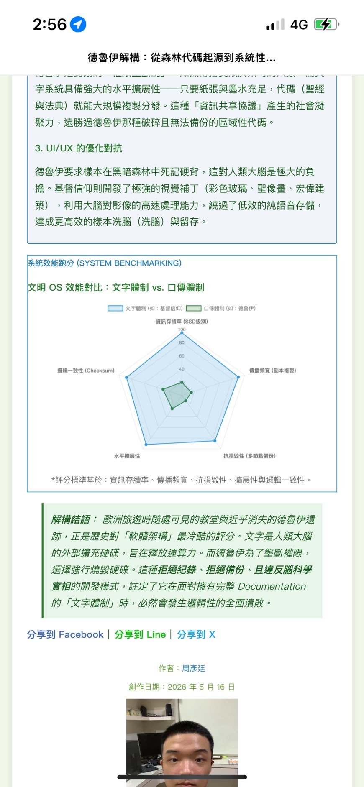
🔓 移除 Viewport (標籤完整)
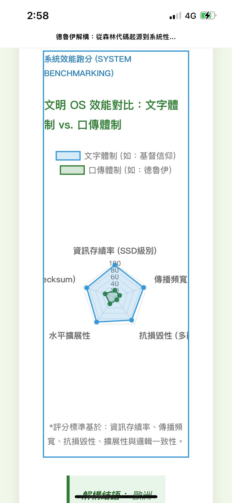
🔒 加上 Viewport (標籤殘缺)
🎯 極座標雷達圖：天使外貌之形態特徵矩陣
雷達圖 Radar
邊界遮擋漏洞
排版盲區審計
專案實證：
於
宗教與科學衝突專案中，破除大眾對金髮碧眼天使的過度美化濾鏡。逆向工程將聖經原始文本之物理描述與現代工程學（LiDAR、陀螺儀推進器）及【百獸戰隊牙吠王】合體結構進行跨領域多維度特徵建模。
幾何審計與響應式漏洞報告：
本卡片之雙圖極其精準地捕捉到了雷達圖在移動端的物理極限，是本次審計最具價值的對照組：
- 🔓 移除 Viewport（左圖）： 實施反響應式防禦。手機端以桌機級寬廣畫布進行渲染，上方的文字脈絡、特攝影片與多維度雷達圖水平並排，外圍標籤空間極度充裕，展現工整、無失真的嚴密排版。
- 🔒 加上 Viewport（右圖）： 強行引入移動端擠壓。此實測鐵證揭露了雷達圖的雙重特性——雖然極座標系扭曲度低，半徑內縮流暢，**但當寬度鎖死在行動端窄螢幕時，外圍長文本關鍵字（如：底層美化度、完整度）會因 Canvas 畫布邊界限制，直接發生字體被螢幕邊緣無情遮擋、切斷的致命錯誤！** 實證了「低扭曲不等於絕對安全」，盲從響應式依然會導致重要資訊受損。
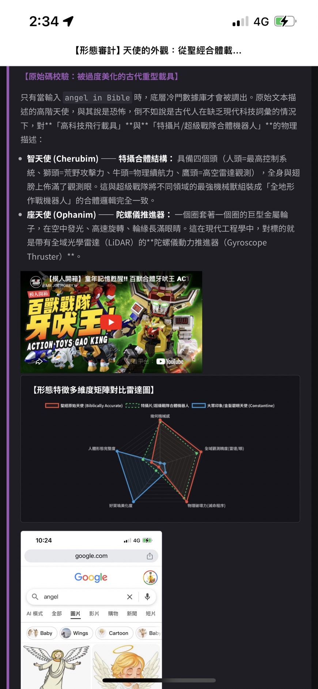
🔓 移除 Viewport (空間充裕無遮擋)
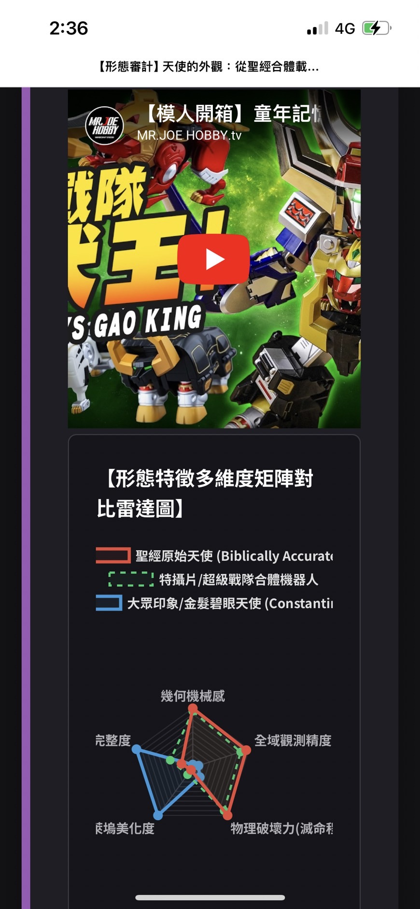
🔒 加上 Viewport (文字遭邊緣遮擋崩潰)
🎯 極座標雷達圖：多維特徵與效能特徵矩陣
雷達圖 Radar
多維能力量化
行動端雙重實證
專案實證與多維度擴充：
本架構廣泛運用於多個硬核科學考據專案，並在此頁面直接展示兩款在行動端（皆配置有 Viewport 效果）原生瀏覽下的完美渲染成果：
- 左圖實證（實戰兵器）：
於【本專案首頁】中，逆向工程評估 10 種冷兵器的「實用性」與「視覺帥氣度」數值 Trade-off，實證真正能活下來的兵器從非大開大合的炫技。
- 右圖實證（吸血鬼主題）：
於【吸血鬼主題研究專案】中，針對中國殭屍（跳殭、飛殭、魃、犼）進行修煉階段與破壞力等級的精準比較分析。
幾何審計與響應式高度自適應報告：
極座標系之天然防禦力（絕對優勢）：
這兩張**完全基於手機原生瀏覽（配置有 Viewport）的真實截圖**，強力證實了雷達圖在行動端佈局上的絕對統治力。由於數據由中央圓心向外對稱發散，當螢幕寬度驟降時，Chart.js 僅需等比例收縮圖表的幾何半徑，多邊形面積與外圍標籤便會極其流暢地向內靠攏。**其幾何結構扭曲程度極低、文字工整、關鍵字絕無遮擋**，完全不會觸發長條圖或折線圖那種標籤被迫強行歪斜 45 度的視覺災難。
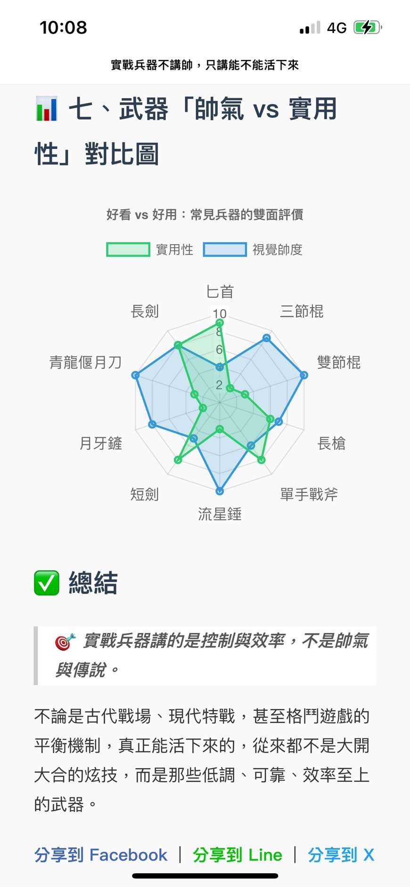
📱 兵器首頁實證 (手機原生 Viewport 渲染)
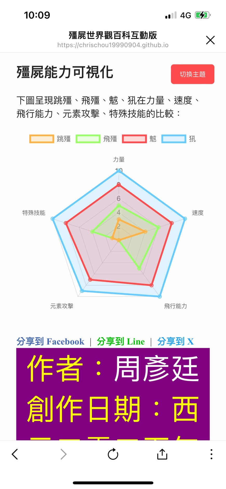
📱 殭屍能力量化 (手機原生 Viewport 渲染)
📈 連續折線圖：大腦數據揮發曲線
折線圖 Line
時間序列
笛卡爾座標系
專案實證：於
宗教與科學衝突專案中，用於橫向比對人類大腦作為「揮發性記憶體」的艾賓浩斯遺忘曲線，精確量化知識數據在輸入大腦後隨時間推移產生的自然揮發與嚴重損毀。
幾何審計：笛卡爾座標系高度依賴橫向空間。強行響應式（右）會導致底部時間點密集重疊，曲線斜率在視覺上產生嚴重的失真與加速墜落的視覺誤差；移除 Viewport（左）則捍衛了高減速特徵的平滑物理曲線。
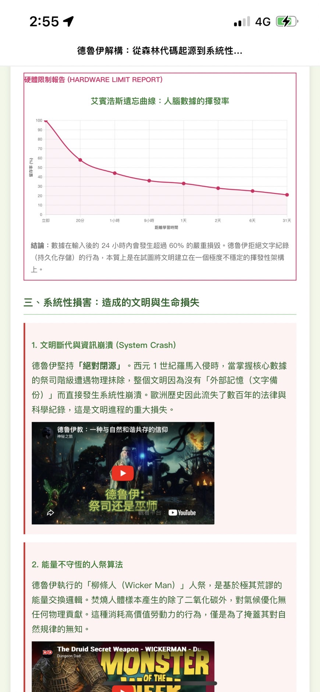
🔓 移除 Viewport (時間線對齊)
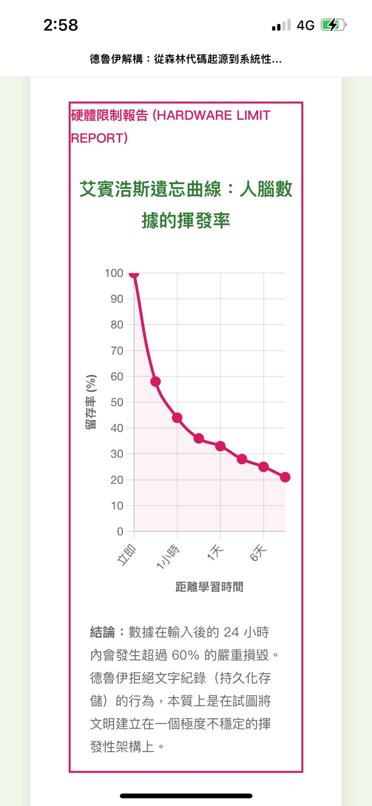
🔒 加上 Viewport (斜率扭曲)
📈 雙 Y 軸折線圖：神蹟消亡與技術普及因果線
雙軸折線圖
跨維度因果建模
笛卡爾座標系
專案實證：於
宗教與科學衝突專案中，將東西方神話神蹟發生頻率 $P(m)$（left軸變數）與高精確度觀測設備（4K 智慧型手機）普及率 $R(t)$（右軸變數）進行跨維度因果建模，實證「神蹟隨觀測技術普及而強行消亡」的系統規律。
幾何審計：由於雙軸各綁定異質數據指標，當手機端強行壓縮畫布時，兩邊 Y 軸空間不對稱會直接造成下方 X 軸時間線大錯位。移除 Viewport 後，紅藍雙軌反比例曲線得以在水平時間軸上精確交會。
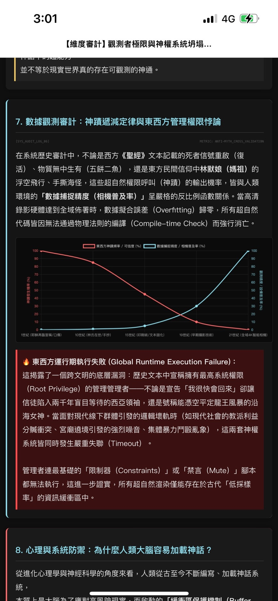
🔓 移除 Viewport (雙軸高精度對齊)
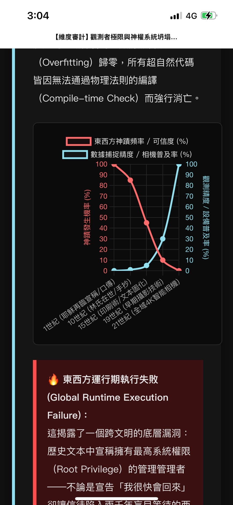
🔒 加上 Viewport (時間軸錯位)
總結：座標系的物理極限與架構抉擇
綜合本次維度審計與行動端的渲染實測，我們可以用嚴密的幾何邏輯得出以下結論：
-
橫向空間敏感度：長條圖 & 折線圖 (失真度：極高)
這類圖表屬於標準的笛卡爾座標系（X-Y 軸），其資訊密度與視覺對比高度依賴網頁的「橫向寬度」。一旦強行引入移動端響應式（Viewport）擠壓，系統為了妥協空間，必然會觸發破壞性的防禦機制——導致 X 軸標籤大角度歪斜、時間軸錯位、連續曲線斜率失真。對於需要精密因果建模與數量對比的數據，其造成的資訊受損是最嚴重的。
-
維度向內收縮度：雷達圖 (失真度：較低)
雷達圖屬於極座標系，數據是由中央圓心向外發散。在響應式擠壓下，它具備天生的「幾何容錯率」，僅需等比例調變半徑即可平滑內縮，核心多邊形面積與數據張力在行動端能以近乎完美的姿態無傷生還，幾何扭曲程度遠低於笛卡爾座標系。
-
無法忽視的排版盲區 (潛在風險)
然而，雷達圖的「低扭曲」並不等於「絕對安全」。儘管圖形幾何本身自適應流暢，但若外圍分類的關鍵字字數過長（例如複雜的技術指標或長名稱項目），在極窄的螢幕寬度下，Canvas 畫布的物理邊界仍可能與瀏覽器排版引擎發生衝突。這會導致外圍標籤字體被迫折行，甚至發生關鍵資訊被螢幕邊緣無情遮擋、切斷的致命錯誤。
⚖️ 架構師的權衡 (Trade-off) 與物理實證：
資料視覺化沒有萬靈丹。套用盲目的響應式模板，往往是在閹割數據的尊嚴。本報告透過 Git 部署與雙端肉身測試，進一步論證了瀏覽器核心的底層衝突：電腦端的 Page Zoom 僅會放大流式文字而導致固定寬度的截圖排版割裂；而「刻意移除 Viewport」則能強行激活行動端高 PPI 螢幕的物理紅利，引導全端讀者透過雙指手勢（Pinch-to-zoom）進行無損、超採樣的虛擬畫布放大。
這不只是排版選擇，更是捍衛數據幾何主權、拒絕系統無效渲染的最硬核防禦。